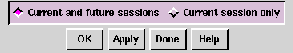

Choose the Application ... option to customize a number of parameters and variables in your Ishmail environment, including mail directory and file locations, print command, Web browser command, and Alert bell volume.
The preferences that you can set with this option apply to the
Ishmail program in general or to the
Main window. There are
several other options for setting preferences specific to the
Reading window, the Composition window, and so forth.
Selecting the Application ... option launches the Application Preferences Window.
You set or change parameters in the Mail Preferences dialog window by:
This section describes the parameters you can specify in the Application Preferences window. The name of each parameter is shown, followed by a brief description of the parameter and an explanation of how to set or change the parameter. Default settings are provided where applicable.
Text fields scroll horizontally to accommodate text that is wider than the field's margins.
You can accept the default information in a text field or enter your own specification. The default text input editor for all text fields is the standard Motif text edit widget.
$HOME), are expanded before
being used. The tilde operator, for example,
~username, which specifies the home directory
associated with
username, is expanded if the
command shell specified by the
$SHELL
environment variable allows it.
This parameter sets the interval at which mail should be checked.
Enter a numerical value in this field if you wish to change the default value shown.
The default value in the text field is derived from the
$MAILCHECK
environment variable. If this variable is not set, the default mail
checking interval is once every 60 seconds.
Toggle this parameter On to cause a "beep" to sound or to have an Alert command executed each time new mail arrives (see Application Preferences Window for more information about setting Alert commands).
The default value for this parameter is On.
Drag the slider left to reduce the volume, or drag to the right to increase the volume.
This parameter causes newly arrived messages to be scrolled into view in your Main window message list.
The default value for this parameter is On.
Toggle this parameter On to cause messages that are marked for deletion to be removed (or hidden) from the Folder Contents list. You can restore "hidden" messages that have been marked for deletion by choosing the Undelete -> From list ... option from the Message pull-down menu before performing a save operation to the mail folder file.
If this parameter is toggled Off, messages that have been marked for deletion remain in the message list but are marked with a D flag. You can restore these messages by performing an undelete operation before performing the next save operation to the folder file.
The default value for this parameter is Off.
Toggle this parameter On to cause messages to be marked for deletion after you save them. If this parameter is in effect, when you choose the Save option to save one or more messages, the messages will be copied to the default save file (also specified in the Mail Preferences window) and will be deleted from the current folder the next time you save changes to the folder.
The default value for this parameter is Off.
This is the normal behavior of most mail programs. This option lets you tell at a glance whether mail has arrived since the last time you saved your folder (fresh mail is marked New) and whether your mail folder contains older messages that you still haven't read (older, unread messages are marked as Unread).
If you want messages to stay marked as New until you read them, regardless of whether the folder is saved, toggle this button off.
Toggle this button
on if you want
Ishmail to remember the
position and size of the
Main,
Reading, and
Composition windows.
These values are saved at the time you exit from
Ishmail.
If you have more than one
Reading or
Composition window open, the
size and position of the first of these windows is saved.
The default value is off.
Toggle this parameter Off if you don't want quick help messages to be displayed. Quick help messages are short helpful hints that can facilitate your use of the window interface. They are displayed at the bottom of Ishmail windows.
The default value for Show Quick Help is On.
Ishmail keeps a list of the most recently used folders, and presents this list when you select the Save to Folder (Recent) option (see Save Options). This gives you a quick way to pick folders without having to type their name or use the File Selection Window dialog.
The default value is 10.
If you want messages you have read to be automatically moved
to another folder when you save the
In-Box, toggle this button
on.
This will result in only
Unread messages remaining in the
In-Box
after it is saved, since
Deleted messages are purged at this time
also.
If you toggle this button on, you must also provide the name of a folder to use. The default name is +mbox. Note that the + is shorthand for your default folder directory.
The default value of this parameter is off.
This field lets you specify the directory which is associated with the + or = character at the start of a folder name.
You can specify a full path name, such as /u/dave/Mail, or a relative path name. Relative path names are resolved starting from your home directory, $HOME.
The default value is Mail, thus the default folder directory is $HOME/Mail. Therefore, a folder specified as +xyz or =xyz is interpreted as $HOME/Mail/xyz.
This parameter specifies which folder is used when you use the Save to: (default folder) function on a message, or group of messages. (See Save Options for more information about message save functions.)
Choices for the default folder are:
Click the Always to: radio button and fill in the folder name to activate this option. The default folder name is +mbox.
For example, if you choose this option and specify Mail as the directory, when you save mail from support@ishmail.com it will be saved to $HOME/Mail/support.
To select this option:
To select this option:
To select this option:
See Save Patterns Option for more information.
Some systems use a feature of NFS known as the automounter. If these terms don't mean anything to you, don't bother reading this section and don't worry about this parameter. In most cases, the presence of the automounter is transparent to programs such as Ishmail.
In some configurations, a special prefix will be added to automounted path names. Say your home directory is /home/greg, and it is automounted. Using the pwd command might return /tmp_mnt/home/greg. The addition of the automounter prefix, in this case /tmp_mnt, can cause problems.
For example: If you attach a file to a message using the Local File Attachment option (see Include/Attach Option), the automounter prefix may be added to the path name. On other systems in your network, the automounter may not be used, or it may use a different prefix. In either case, the path name of your attached file may not be reachable unless the automounter prefix is first stripped off.
This parameter lets you specify the automounter prefix, so that Ishmail can strip it off of file names before they are used. The default value for this parameter is (on most systems) is /tmp_mnt. Check with your system administrator for more information.
The default print command is pr | lp, which causes the message to be formatted into pages, each with a running header containing time and date, before sending it to the printer.
You can string multiple commands together in this field using the UNIX pipe operation, specified by a vertical bar (|) between command names.
Ishmail automatically recognizes addresses on the World Wide Web (known as URLs) which may be contained in mail messages, and highlights them in a different font or color. When you place the cursor on a URL and press the left mouse button while holding down the Ctrl key, the URL is sent to a Web browser command which will display the associated Web page.
This parameter lets you specify the Web browser command. Relative path names are resolved using your $PATH environment variable. The value of the URL is substituted for %s.
The default Web browser command is: Mosaic %s
Use the row of buttons across the bottom of the dialog window you are working in to apply or cancel changes you've made in a preferences dialog window.

There are four options to choose from in all of the Options menu dialog windows. To apply your changes:
If you choose Current session only, your changes are in effect only until you close the current mail session.
If you choose Current and future sessions, your mail resource file is updated accordingly and your changes are in effect for future sessions.
The custom resource file to which your changes are applied is $HOME/.ishmailrc. You can also edit this file outside of the Ishmail program. If the file already exists, the new or changed parameters will be merged with the contents of the file rather than simply overwriting the file. See Ishmail Resources for information about editing $HOME/.ishmailrc.